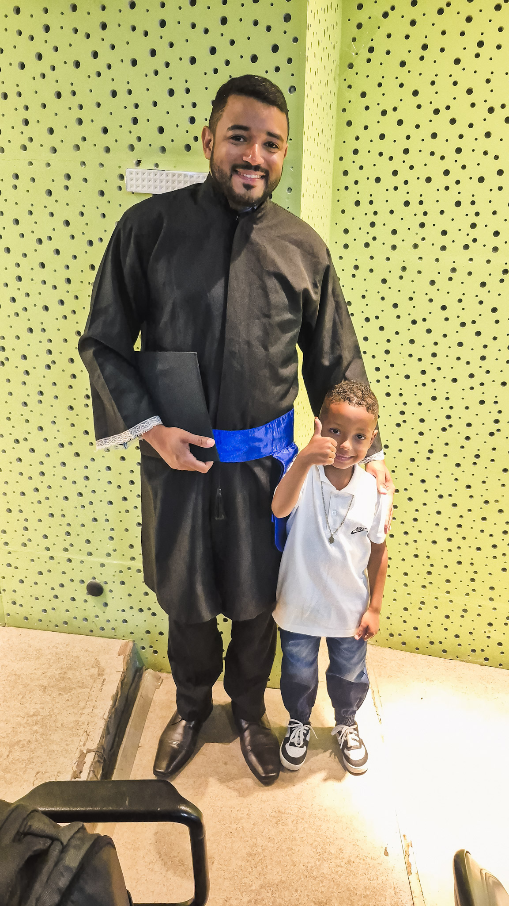
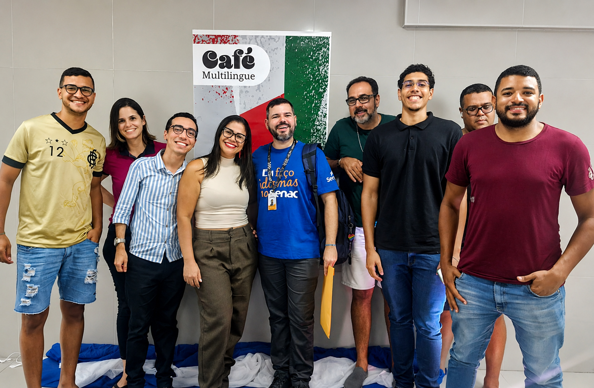

Learning with identity
Instead of showing only isolated sentences, this portfolio organizes the content by unit, with vocabulary, grammar, example conversations, and personal sentences connected to my life.
Units 1 to 6 • A modern portfolio about what I learned in English class
I am a software developer from Brazil. I like technology, studying, and learning new things. I also like to travel and visit new places. Traveling helps me meet people, learn about culture, and practice English in real situations.
This website shows what I learned in Units 1, 2, 3, 4, 5, and 6 of Ventures Basic. It is my portfolio for class, but it also reflects who I am.
Instead of showing only isolated sentences, this portfolio organizes the content by unit, with vocabulary, grammar, example conversations, and personal sentences connected to my life.
The visual style uses dark blue tones, bright accents, glass panels, and open sections that can grow as more content is added.
I want to use English in class, at work, and while traveling. I also want to improve my English to grow my professional career and reach better opportunities. This site presents that progress in a more creative and personal way.
In this unit, I learned how to identify personal information, ask questions about names and phone numbers, say where someone is from, use countries and months, and work with possessive adjectives such as my, your, his, and her.
My first name is Eduardo.
My last name is Silva.
I am from Brazil.
I am a software developer.
My birthday is February 7.
I want to use English to grow my career and reach new opportunities.
ID: DEV-2026
Birthday: February 7
What’s your name? → My name is Eduardo.
What’s his name? → His name is Jack.
What’s her name? → Her name is Sara.
Where are you from? → I am from Brazil.
A: What’s your first name?
B: My first name is Eduardo.
A: What’s your last name?
B: My last name is Silva.
A: Where are you from?
B: I am from Brazil.
This unit helped me introduce myself with more confidence. I can now talk about my name, my country, and simple personal information in English. This is useful in class, at work, and when I travel.
In this unit, I learned classroom vocabulary, how to ask for things, how to describe location with in, on, and under, and how to talk about class information and the days of the week.
I study English at school.
I need a notebook, a pen, and a dictionary.
My notebook is on the desk.
My pencil is in the desk.
The dictionary is under the chair.
My English class is important for my work and my travels.
Where’s my pencil? → It is in the desk.
Where’s my notebook? → It is on the desk.
Where’s my dictionary? → It is under the chair.
What do you need? → I need a pen.
A: What do you need?
B: I need a dictionary.
A: Here you are.
B: Thank you.
This unit is practical. It helps me understand classroom instructions and talk about the materials I use to study. It also helped me describe where things are, which is useful in many everyday situations.
In this unit, I learned family vocabulary, how to identify relationships, how to describe a family picture, and how to ask and answer yes/no questions with have.
My family is very important to me. This is my family. This is my mother. This is my father. I also have a nephew and a niece, and they are very special to me. My nephew is my sister's son, and my niece is my sister’s daughter.

Do you have a sister? → Yes, I do.
Do you have a brother? → No, I don’t.
Who is Vera? → Sam’s aunt.
Who is Habib? → My brother.
A: Do you have a sister?
B: Yes, I do.
A: What’s her name?
B: Her name is Diana.
This unit helped me talk about family relationships in simple English. I can describe family members, ask questions, and write short sentences about the people in my life. It is one of the most personal units because it connects language to identity and affection.
In this unit, I learned how to talk about health problems, body parts, the doctor's office, and how to describe what hurts.
My head hurts.
My hand hurts.
I have a headache.
I need medicine.
I go to the doctor’s office.
The nurse helps the patient.
What hurts? → My head hurts.
What hurts? → My feet hurt.
What’s the matter? → I have a cold.
What’s the matter? → I need a doctor.
A: What’s the matter?
B: My head hurts.
A: Oh, I’m sorry.
B: I need medicine.
This unit helped me talk about simple health problems in English. I can say what hurts and understand basic vocabulary at the doctor’s office.
In this unit, I learned places around town, transportation, and how to describe locations using prepositions.
The bank is on Main Street.
The library is next to the school.
The hospital is across from the supermarket.
The pharmacy is between the restaurant and the bakery.
I go to school by car.
I like to visit new places around town.
Where’s the school? → On Main Street.
Where’s the bank? → Next to the supermarket.
Where’s the restaurant? → Across from the bank.
Where’s the pharmacy? → Between the restaurant and the supermarket.
A: Excuse me. Where’s the library?
B: It is on Main Street.
A: Is it next to the school?
B: Yes, it is.
This unit is useful for travel and daily life. I can ask where places are, understand simple directions, and talk about transportation.
In this unit, I learned how to ask and tell the time, talk about events, read schedules, and describe times of the day.

My English class is at 6:00 P.M.
My meeting is at 10:00 in the morning.
My appointment is at 2:30 in the afternoon.
My favorite TV show is at 8:00 at night.
I study English in the evening.
Today is a busy day.
What time is it? → It’s nine o’clock.
What time is the class? → At 6:30.
Is your class at 11:00? → Yes, it is.
Is your appointment at 12:30? → No, it isn’t.
A: What time is your class?
B: It is at 6:30 in the evening.
A: Is your meeting at 10:00?
B: Yes, it is.
This unit helped me talk about time and schedules. I can read invitations, talk about appointments, and organize my day in English.
This section is ready for personal photos. You can replace the placeholders with your own images without changing the layout.